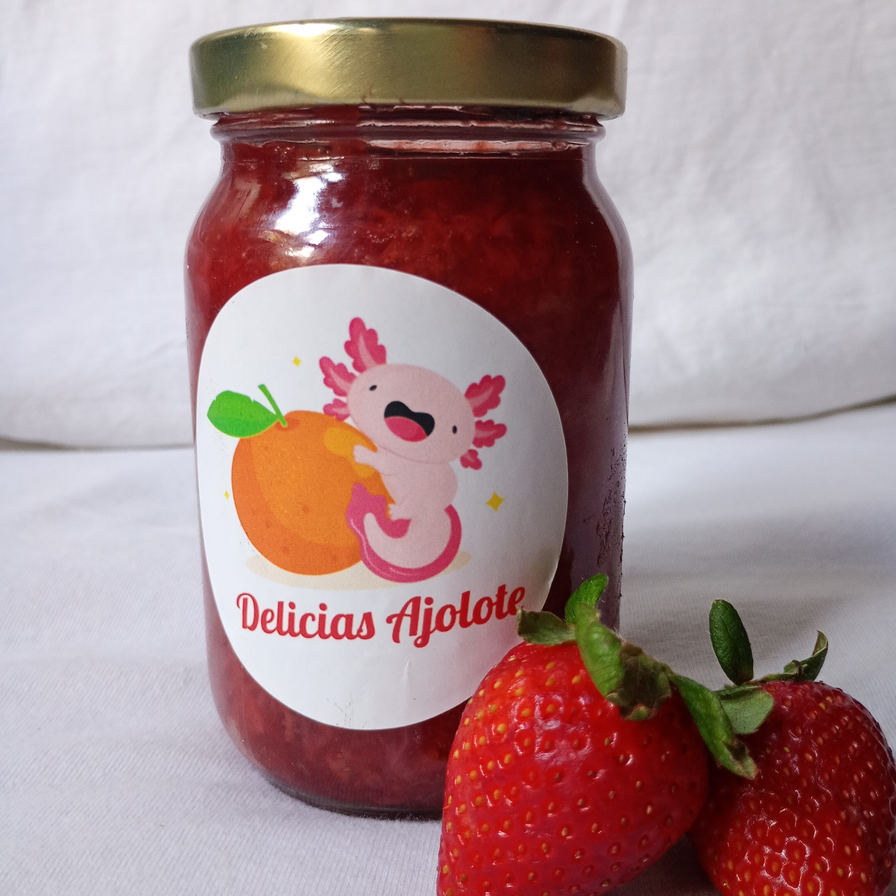

Fresa
Endulza tus mañanas con el sabor clásico de la fresa. Elaborada con frutas frescas y cocida a fuego lento, esta mermelada conserva todo el aroma y dulzura natural de la fresa en su punto justo.
Contenido: 240 g
Descubre el sabor auténtico de la naturaleza con Delicias Ajolote, mermeladas artesanales elaboradas con frutas frescas, seleccionadas a mano y sin conservadores. Cada frasco encierra una explosión de sabor, con combinaciones únicas y recetas tradicionales que celebran lo mejor del campo mexicano.
Experiencia natural: Texturas suaves, aromas intensos y el dulzor justo. Cada cucharada es una invitación a disfrutar lo auténtico.
Hecho a mano: Cada frasco es preparado en pequeños lotes, cuidando cada detalle desde la fruta hasta el envasado, para garantizar calidad y frescura.
Natural y consciente: Sin colorantes, sin conservadores y con ingredientes locales. Porque creemos que lo más rico también puede ser lo más sano.
Endulza tus mañanas con el sabor clásico de la fresa. Elaborada con frutas frescas y cocida a fuego lento, esta mermelada conserva todo el aroma y dulzura natural de la fresa en su punto justo.
Contenido: 240 g
Una mezcla reconfortante que recuerda a los postres caseros de antaño. Trozos de manzana suave infusionados con canela real, en una preparación artesanal que combina dulzor y calidez.
Contenido: 240 g
Una fusión deliciosa y diferente. La textura cremosa de la calabaza se realza con el toque cítrico de la naranja, creando una mermelada con personalidad propia, perfecta para quienes buscan sabores únicos.
Contenido: 240 g